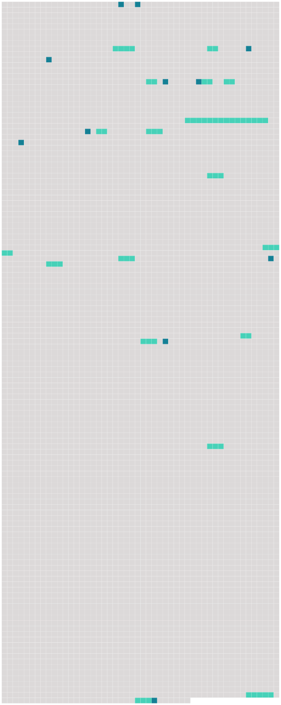

Longueur nb maillons : 28 mentions |
|
Mais, vers les trois heures de l'après-midi, l'homme de quart cria d'une voix retentissante : « [Terre] !! … [Terre] !! [19 phrases]
La seule chose certaine, c'était qu'on était sur [une terre du Pacifique] ; il fallait se contenter de ce renseignement, pour le moment. [Cette terre] , sur les côtes de [laquelle] le « Queen of the Waves » avait fait naufrage, était étrange : ce n'était partout qu'arbres renversés, excavations profondes ; en certains endroits, on eût dit que le granit, qui formait la base du sol, avait été ouvert, séparé en deux par quelque cataclysme.
Évidemment, un tremblement de terre s'était produit [là] , à une époque peu éloignée : les plus entendus parmi les naufragés fixèrent cette date à deux ou trois ans au plus. [7 phrases] Il était important de savoir quelle était la nature de [la terre] sur [laquelle] on se trouvait ; était [-ce] [une île] ou bien [le continent] ?? [11 phrases] Ce n'est pas mon intention de vous donner de longs et minutieux détails de cette excursion et de toutes les difficultés que les voyageurs rencontrèrent en route ; essayez, si vous le pouvez, de vous faire une idée de ce que peut être une promenade de ce genre, dans [un pays inconnu, coupé de ravins et rendu presque impraticable par mille difficultés naturelles] [2 phrases]
Puis, ils se regardèrent, et dirent presque simultanément, avec une note de découragement dans la voix :
» [5 phrases] … Et tous deux songeaient : comment sortir d' [ici] ?? [10 phrases] Ils avaient la conviction que les naufragés du « Queen of the Waves » étaient voués à une mort certaine, sur [ce rocher désert] [27 phrases]
» [2 phrases] Si nous sommes destinés à périr sur [ce rocher désert] , nous ne pourrons même pas la faire connaître au monde.
» [18 phrases]
» [45 phrases] Affolé par la nouvelle, je décidai de fuir la juste colère de celui que j'avais trahi, et je pris passage à bord du « Queen of the Waves », qui fit naufrage sur les côtes d' [une île inconnue] [100 phrases] Sans le « Nautilus », nous étions condamnés à périr sur [une île volcanique et déserte] Nous avons donné au capitaine des funérailles dignes de ses goûts et de ses exploits, et nous avons utilisé le bateau pour fuir [les régions dangereuses] [où] le naufrage nous avait jetés. |
 |
Il est possible de télécharger la ressource sur la page Ortolang |
Si vous avez des questions ou vous voyez des erreurs, merci d'envoyer un mail à silvia.federzoni89@gmail.com |